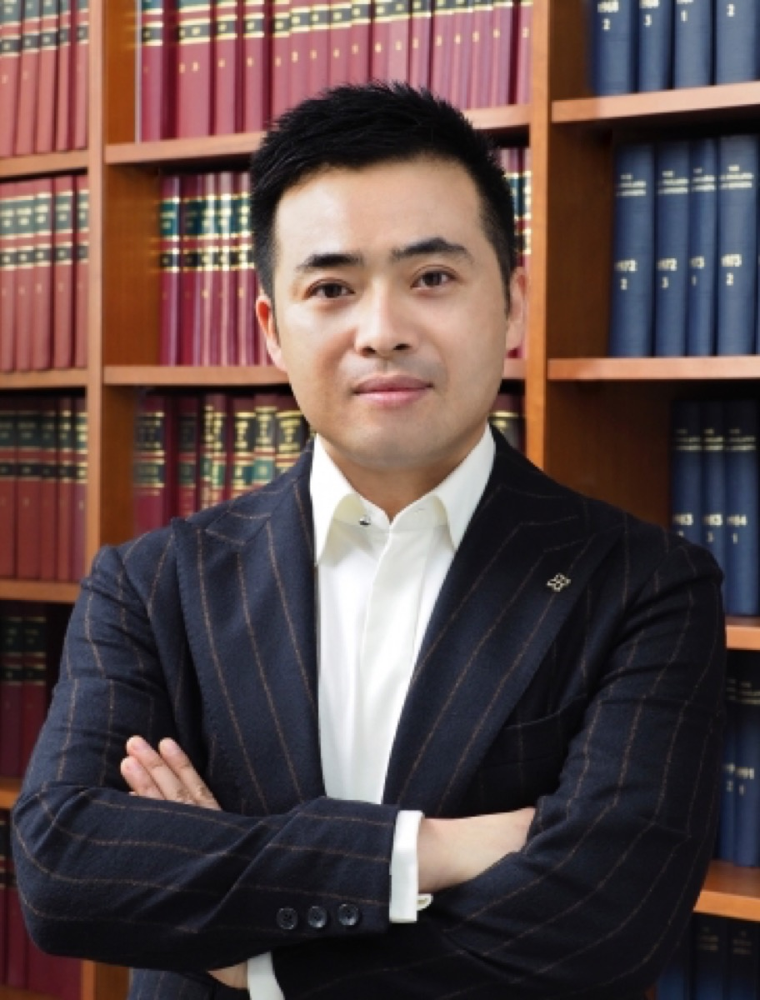
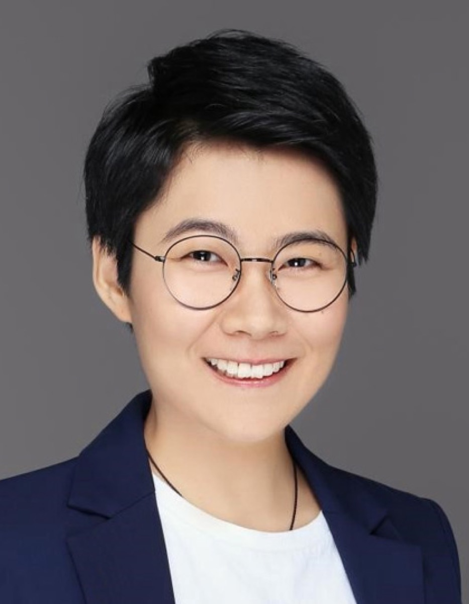
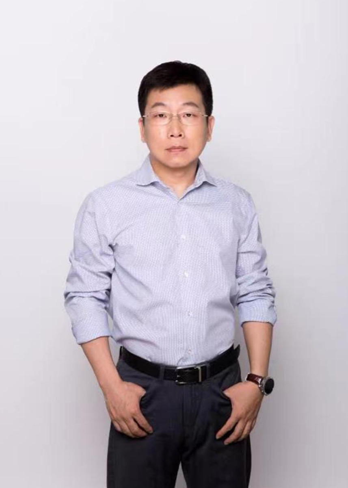
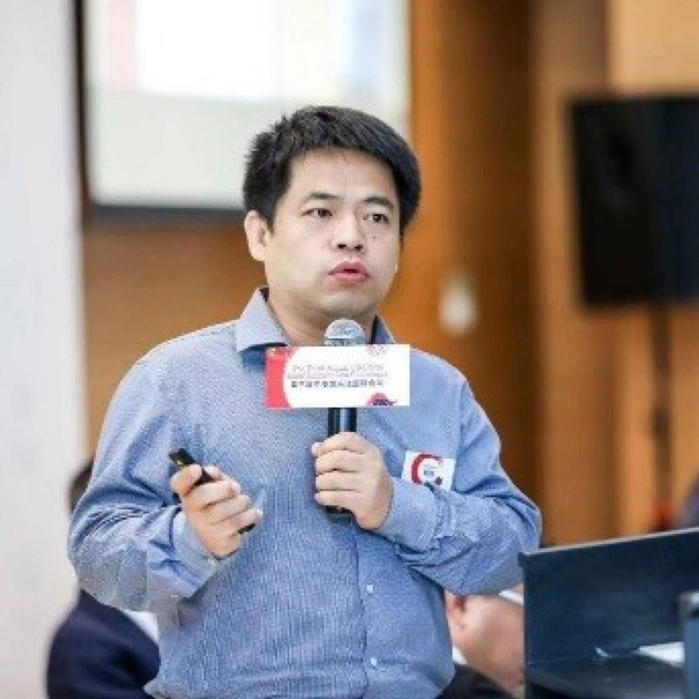
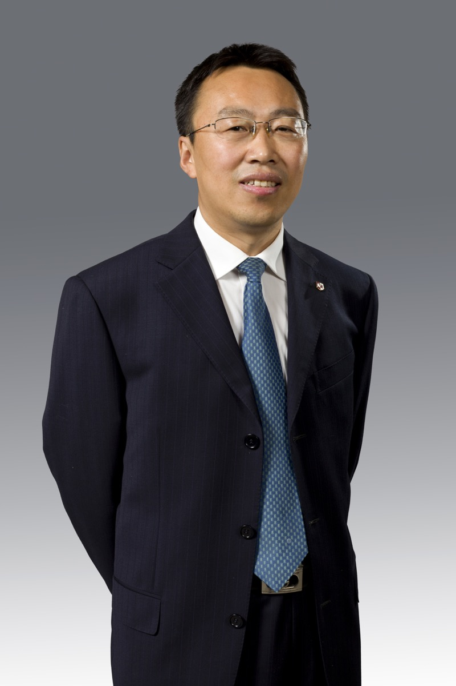
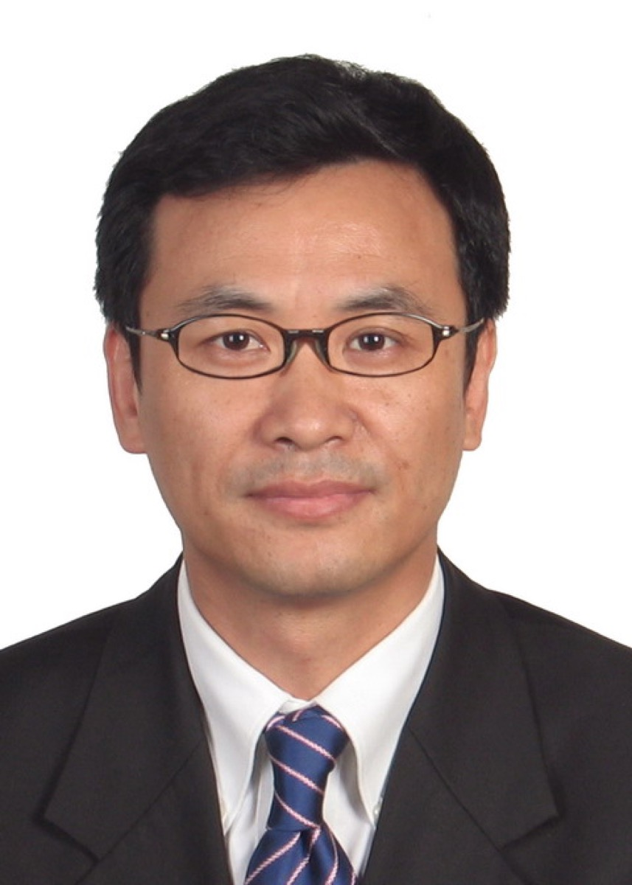

首届AI法律峰会
12月5日聚焦人工智能前沿法律问题，汇聚司法实务、科技产业、企业法务、律师事务所与学术界代表展开深度对话。
亚太科技法律研究会致力于推动科技、法律与公共政策领域的教育、研究与国际交流，提升社会对科技发展所带来的法律、伦理与治理挑战的理解与应对能力。
通过科技法律高级研修班、线上课程、公益工作坊及公开讲座，为学生、教育工作者、科技与法律从业人员及社会公众提供系统化知识培训。
组织及资助公益研究项目与专题小组，围绕人工智能伦理、数据治理、平台责任等议题开展研究，并向社会公开发布研究报告与学术成果。
主办或协办国际年会、区域研讨会、公益圆桌及青年学者论坛，促进科技法治、伦理规范与最佳实践经验的分享。
通过峰会、研修、讲座及专题对话，连接科技法律领域的研究者与实践者。
聚焦人工智能前沿法律问题，邀请司法实务、科技产业、企业法务、律师事务所与学术界代表在香港大学展开深度对话。
讲座主题、主讲嘉宾、时间地点与报名方式将在资料确认后公布。
研究团队连接法学、科技产业、企业治理与公共政策实践，围绕人工智能与法律的前沿问题开展研究与交流。

北京大学法学院副院长；长聘副教授
研究法理学、法律经济学、信息隐私及科技与社会治理。
北京大学公开资料 ↗
小红书副总裁；首席合规官
关注全球合规、数据隐私、安全与人工智能治理。

腾讯集团副总裁；腾讯研究院院长
长期参与互联网产业相关法律、经济与公共政策研究。
腾讯官方资料 ↗Louis Vuitton 亚太及中国区知识产权总监
长期负责时装业务在亚太及中国地区的知识产权事务，拥有跨境商业与区域法律经验。
蚂蚁国际总法律顾问
负责跨境业务的法律、合规与治理事务。
蚂蚁国际官方资料 ↗腾讯公司副总裁、法务联合负责人
关注数字内容产业、版权保护、科技创新与平台治理。

北京大学法学院长聘副教授
主要研究知识产权法、竞争法与网络法。
北京大学公开资料 ↗顾问委员会汇聚法学理论、金融与市场制度、数据权益、知识产权及科技治理领域的资深学者与专业人士。
牛津大学教授；墨尔本大学访问教授
研究知识产权、创新政策、商标法及信息科技法。
牛津大学公开资料 ↗纽约大学法学院分管大学合作副院长；Walter J. Derenberg 知识产权法教授
研究著作权、专利、商标、商业秘密、外观设计保护及人工智能相关知识产权问题。
纽约大学法学院公开资料 ↗北京大学法学院院长、教授
研究经济法、国际经济法、金融法、商法与比较法。
北京大学公开资料 ↗浙江大学光华法学院教授
长期从事知识产权教学、研究与法律实务。
浙江大学公开资料 ↗
上海交通大学凯原法学院院长、特聘教授
研究民法、数据法、信息法与人工智能治理。
上海交通大学公开资料 ↗
浙江大学敦和讲席教授；数字法治研究院院长
研究法理学、法律哲学、数字法学与法律思想史。
浙江大学公开资料 ↗香港德辅大律师事务所主席、资深大律师
曾担任香港通讯事务管理局主席及香港大律师公会主席，专长知识产权、民商法与仲裁。
德辅大律师事务所公开资料 ↗发布研究会活动、研究成果、合作消息与重要公告。
会员类别、申请条件与申请方式将在确认后公布。
研究会欢迎关注科技法律、公共政策与产业实践的研究者、专业人士、青年学者及合作机构参与交流。